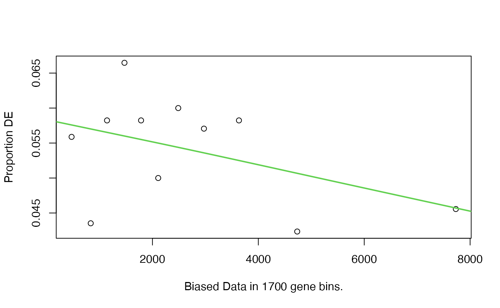
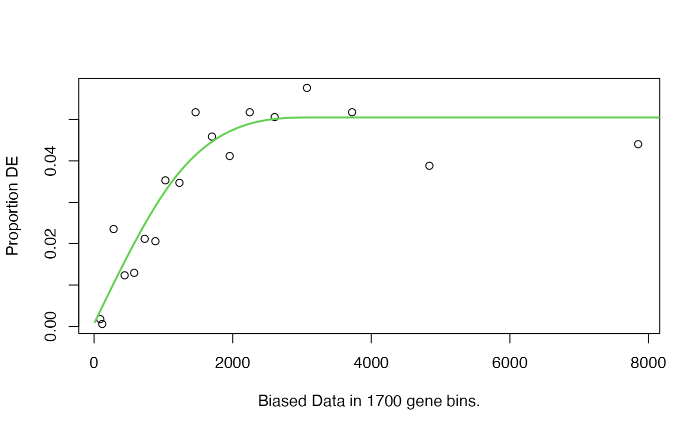
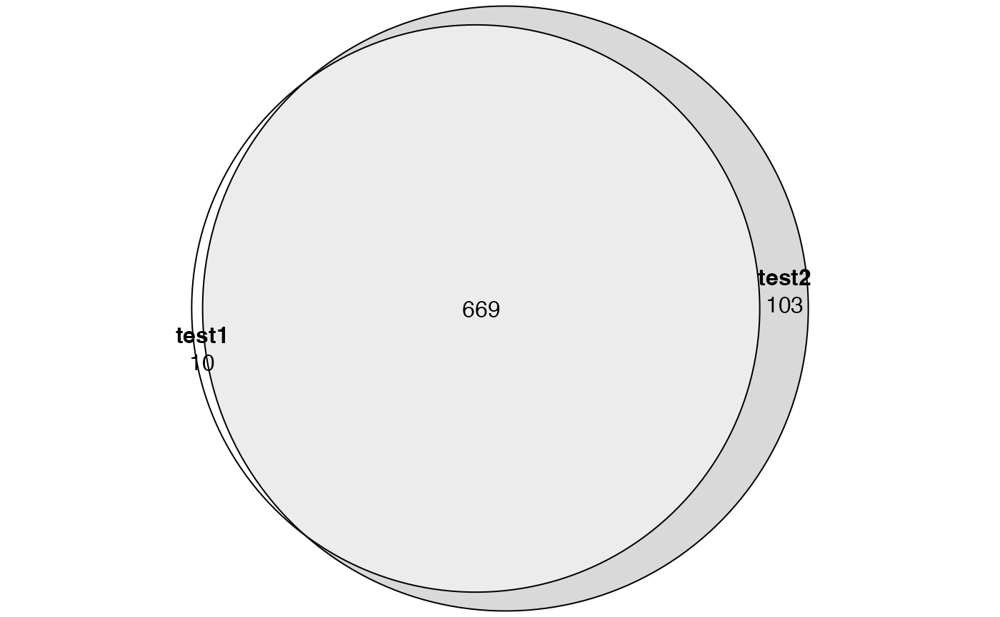
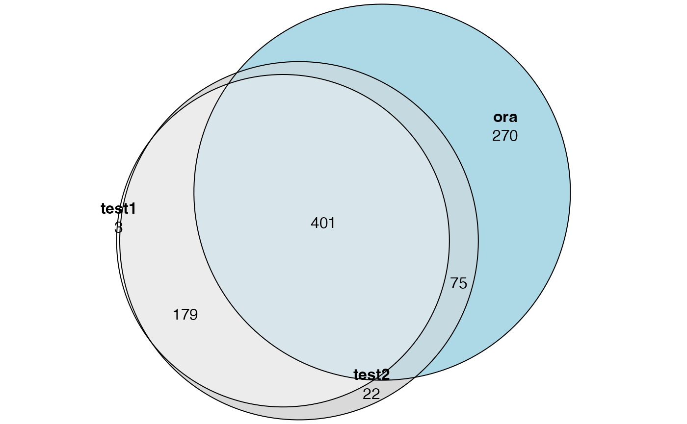

vignettes/topic3_03_goseq.Rmd
topic3_03_goseq.RmdThe input of goseq is very simple. It only needs a named binary vector with values 0 or 1, where 1 means the gene is a DE gene.
If the first try, we read the DE results from de.rds, remove genes have no p-values (mainly not expressed genes or very lowly-expressed genes), and construct the binary vector.
tb = readRDS(system.file("extdata", "de.rds", package = "GSEAtraining"))
tb = tb[tb$symbol != "", ] # keep pc genes
tb = tb[!is.na(tb$p_value), ]
tb$fdr = p.adjust(tb$p_value, "BH")
genes = ifelse(tb$fdr < 0.05, 1, 0)
names(genes) = tb$ensembl
head(genes)## ENSG00000000003 ENSG00000000005 ENSG00000000419 ENSG00000000457 ENSG00000000460
## 0 0 0 0 0
## ENSG00000000938
## 1
table(genes)## genes
## 0 1
## 19528 1072The key assumption of goseq is a gene being DE is biased by its length. The distribution of \(p_\mathrm{DE}\) against gene length can be estimated by nullp(). (Em.. this distribution looks different from the one in the original paper)

Then use goseq() function to perform the test by correcting the “gene length bias”:
tb1 = goseq(pwf, "hg19", "ensGene")## Warning: package 'S4Vectors' was built under R version 4.3.2
head(tb1)## category over_represented_pvalue under_represented_pvalue numDEInCat
## 3482 GO:0006955 3.990139e-59 1 272
## 993 GO:0002376 4.286179e-54 1 328
## 2610 GO:0005576 4.576135e-46 1 407
## 3479 GO:0006952 1.164931e-45 1 235
## 6614 GO:0019814 4.974087e-36 1 49
## 4484 GO:0009605 1.684470e-35 1 293
## numInCat term ontology
## 3482 1639 immune response BP
## 993 2367 immune system process BP
## 2610 3580 extracellular region CC
## 3479 1508 defense response BP
## 6614 88 immunoglobulin complex CC
## 4484 2442 response to external stimulus BPThis time we keep the genes with p-values as NA (they are basically genes not expressed). We simply assume they are not DE.
tb = readRDS(system.file("extdata", "de.rds", package = "GSEAtraining"))
tb = tb[tb$symbol != "", ] # keep pc genes
tb$fdr = p.adjust(tb$p_value, "BH")
genes = ifelse(tb$fdr < 0.05, 1, 0)
genes[is.na(genes)] = 0
names(genes) = tb$ensembl
table(genes)## genes
## 0 1
## 38668 1072Let’s check the “bias distribution” again.
pwf = nullp(genes, "hg19", "ensGene")## Loading hg19 length data...## Warning in pcls(G): initial point very close to some inequality constraints
This becomes interesting. It shows a reverse pattern as in the original paper.
Note many lowly-expressed genes are short, so the increasing trend in the left part of the curve is from the proportion of “expressed genes” getting higher? Or can we say actually there is no such bias as mentioned in the goseq paper?
We perform the test:
tb2 = goseq(pwf, "hg19", "ensGene")We compare tb1 and tb2:
library(eulerr)
lt = list(
test1 = tb1$category[p.adjust(tb1$over_represented_pvalue, "BH") < 0.05],
test2 = tb2$category[p.adjust(tb2$over_represented_pvalue, "BH") < 0.05]
)
plot(euler(lt), quantities = TRUE)
Does it mean the correction has no effect?
We also compare to ORA.
l = tb$fdr < 0.05; l[is.na(l)] = FALSE
diff_gene = tb$ensembl[l]diff_gene are Ensembl IDs. We convert them to Entrez IDs:
library(GSEAtraining)
diff_gene = convert_to_entrez_id(diff_gene)## 'select()' returned 1:many mapping between keys and columnsWe use clusterProfiler to perform ORA analysis:
library(clusterProfiler)
library(org.Hs.eg.db)
tb3 = enrichGO(gene = diff_gene, ont = "BP", OrgDb = org.Hs.eg.db)Now we compare ORA to GOseq results. Note tb1 and tb2 contains results for all three ontologies (BP, CC, MF). Here we only need BP.
tb1 = tb1[tb1$ontology == "BP", ]
tb2 = tb2[tb2$ontology == "BP", ]
library(eulerr)
lt = list(
test1 = tb1$category[p.adjust(tb1$over_represented_pvalue, "BH") < 0.05],
test2 = tb2$category[p.adjust(tb2$over_represented_pvalue, "BH") < 0.05],
ora = tb3$ID[p.adjust(tb3$pvalue, "BH") < 0.05]
)
plot(euler(lt), quantities = TRUE)
Conclusion: goseq was designed when the Possion distribution was used for DE analysis and maybe it does not help nowadays when more advanced DE methods are used.